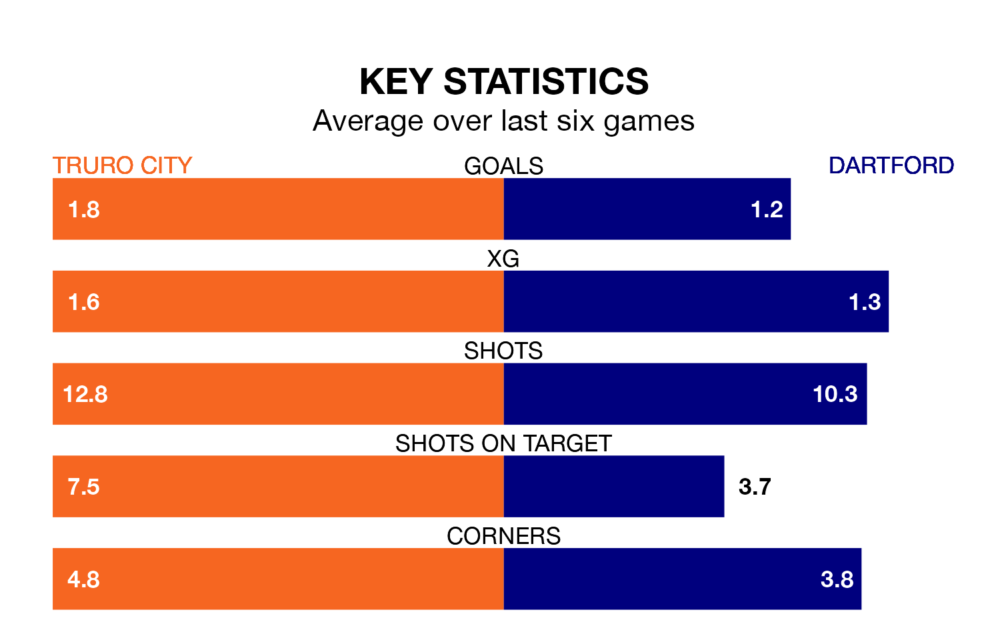

Truro City host Dartford at Manadon Sports Hub on late Tuesday on the back of four consecutive wins in the National League South.
Truro have picked up 15 points from their last six games, and they face a Darts side who lost their last match, and have collected seven points from the last possible 18.
In the last 10 years, Truro and Dartford have played each other on eight occasions. Truro won four of them, Dartford three, and they drew once.
On average, Truro scored 1.9 goals and the Darts 2.1 in those matches.
Their last meeting was on March 30 2019, when they played out a 1-1 draw.
Dartford are 21st in the table after 39 games, of which they have won 10 and drawn nine, earning 39 points.
Truro are two places ahead of the Darts in 19th, with 12 wins and five draws putting them on 41 points.
With 49 goals in 39 games so far this season, the away team are scoring at below the league average rate with 1.3 goals per game. And they are conceding more than average, letting in 62 goals at a rate of 1.6 per game.
City, meanwhile, are average scorers, with 1.4 goals per game. They have conceded 1.6 goals per game.
Truro's last match was on March 2, a 2-0 win against Taunton Town.
Dartford lost 2-1 against Maidstone United last time out, on January 9.
Updated: 12:16 (UTC), 25/03/24